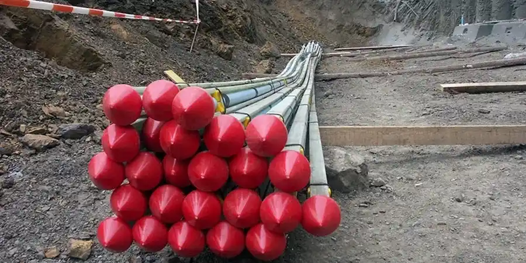

Ein häufiger Fehler bei Bauprojekten in Duisburg ist die Annahme, dass der Boden im gesamten Stadtgebiet gleichmäßig trägt. Dabei reicht das Spektrum von tonigen Terrassenböden im Norden bis zu aufgefüllten Hafengebieten im Westen. Wer hier auf eine korrekte aktive/passive Verankerungsbemessung verzichtet, riskiert unkontrollierte Verformungen der Baugrube. Gerade bei tiefen Aushubarbeiten unterhalb des Grundwasserspiegels ist die Interaktion zwischen Erdruck und Verankerungskräften komplex. Ergänzend zur Verankerungsplanung ist ein Studium der Bodenklassifikation nach DIN 18196 ratsam, um die Schichten korrekt zuzuordnen. Nur wer die lokalen Böden wirklich kennt, kann die erforderlichen Ankerkräfte zuverlässig berechnen.

In Duisburger Auffüllböden entscheidet die Wahl zwischen aktivem und passivem Ankersystem über die Standsicherheit der gesamten Baugrube.